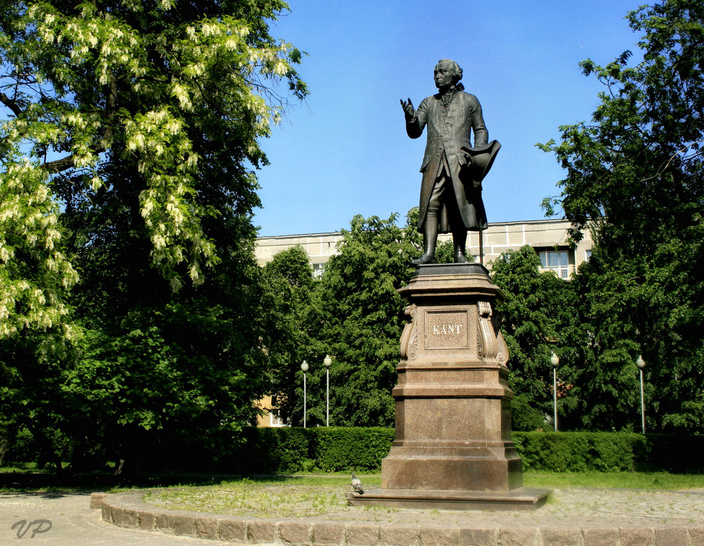

The Critique of Pure Reason (in Brief)
-
Contents:
- Prefaces A and B
- Introduction
Prefaces A and B
Humans always seem to push their capacity to reason further than it can actually go, thereby entering the arena of 'metaphysics'. Historically, this has always ended in confusion and falsehood, no matter how ostensibly careful the various metaphysicians have been. The solution to this confusion is for reason to arrive at a state of self knowledge. This will be done by critiquing the faculty of reason insofar as it can cognize independently of experience. This is equivalent, ultimately, to asking the questions: is metaphysics possible? and: what is the origin of metaphysical thinking?
Disciplines that actually make progress (i.e. those that aren't metaphysics) always have an a priori sense of what their objects are: the theoretical disciplines determine their object a priori and then conceptualise it; the practical disciplines determine the object a priori and then actualise it. Metaphysical enquiry might benefit if it operates in a similar way: as such, Kant assumes that objects must conform to our cognition, rather than assuming - as metaphysics has historically done - that our cognition always conforms to its objects.
Approaching metaphysics in this way, we can determine whether or not we are describing the objects of metaphysics accurately by asking: does this conform to the rules of our cognition?
This approach also has a disadvantage: it only permits us to cognize objects insofar as we have 'provided' them with certain aspects (derived from the rules of our cognition). This leads to the conclusion that any cognition beyond the boundaries of possible experience is impossible. As such, most metaphysics in the traditional sense of the word is impossible.
Introduction
All cognition begins with experience, because the objects of experience are required to produce a representation in the mind, by stimulating the senses. Not all cognition comes from experience, however, since the understanding can provide cognition without reference to particular objects of experience. It is therefore precise to say: all cognition is "awoken" or "provoked" by experience. Cognitions are built up of parts that are either sensuously intuited, or provided by the understanding. Kant wants to ask: are there any cognitions that are composed entirely of parts provided by the understanding? In other words: are there any a priori cognitions?
A priori cognitions are the opposite of a posteriori cognitions, which are only possible through experience. There are, in fact, a priori cognitions that refer to experience; however, since their experiential aspects are derived from general rules (rather than immediate objects of experience), they are still a priori. Cognitions can therefore be classified as follows:
- A posteriori cognitions, which are only possible through experience. Example: "This particular house is big."
- A priori cognitions, which can be justified without referring to experience. Example: "Every change has a cause." (Even though "change" is an empirical concept, it doesn't refer to any particular empirical thing; the cognition is therefore still a priori.
- Pure a priori cognitions, which contain nothing empirical. Example: 2 + 4 = 6.
Only a priori cognitions can be necessarily true, because the experience that makes up a posteriori cognitions only tells us how a thing is – it doesn't tell us that the thing cannot be otherwise.
Now, we have already seen that a priori cognitions exist; some examples have been given, and, furthermore, the fact that we know some things to be necessarily true reveals that we already have some a priori cognitions which provide this necessity. As such, part of the project for the Critique is to determine how these a priori cognitions are possible, and what fundamental principles they are grounded on.
Every judgment that we can make has one of two relations between the subject and predicate. If the predicate inherently belongs to the subject, then the judgment is analytic; it is a statement of clarification. Otherwise, the judgment is synthetic and is a statement of amplification. Judgments of experience are always synthetic, because experience always appends, rather than clarifies - and analytic statements are mere clarifications. In other words: since experience amplifies cognition, the judgments coming from experience are also ampliative and are therefore synthetic. Kant's important question is: what about synthetic judgments which are a priori? They must be ampliative, but they cannot be amplified by experience. Comprehending the possibility of the synthetic a priori is central to the Critique.